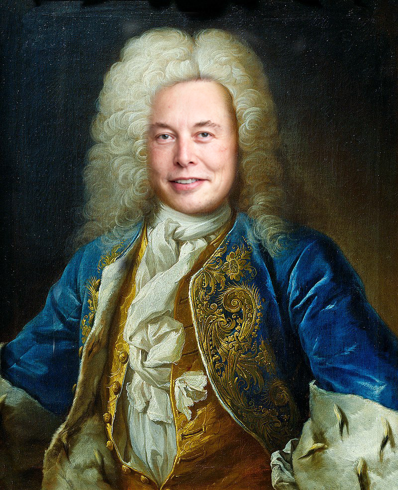

This image really capture my idea of if Elon Musk was born a century or two before he was born in this timeline.

This master piece is a picture you may call a sequel to the image above. I call this one "LORD ELONG"
This picture is a portrayal of a alternative universe where aliens arrived a few decades later. The plane in this picture is a p-51 mustang mostly used during the heat of ww2.
This is yet another alternative universe where New Zealand was not colonized by Great Britain but by Sweden.
This is a quick brain fart that I did not do very well but it dose show an idea at least.
This here is a failed idea it is not funny nore good looking but I call it "the chef vs the Chief"
back